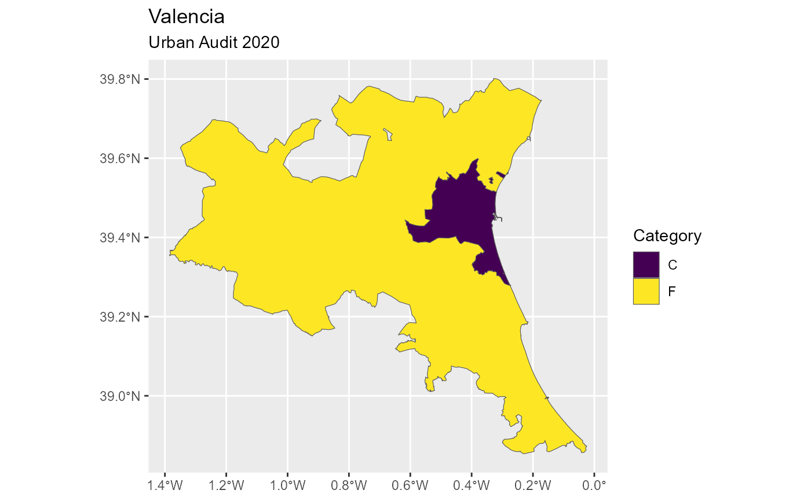

GISCO API single download
Source:R/gisco-get-unit-country.R, R/gisco-get-unit-nuts.R, R/gisco-get-unit-urban-audit.R
gisco_get_unit.RdDownload datasets of single spatial units from GISCO to the
cache_dir.
Unlike gisco_get_countries(), gisco_get_nuts() or
gisco_get_urban_audit() (that downloads a full dataset and applies
filters), these functions download a single per unit, reducing the time
of downloading and reading into your R session.
Usage
gisco_get_unit_country(
unit = "ES",
year = 2024,
epsg = c(4326, 3857, 3035),
cache = TRUE,
update_cache = FALSE,
cache_dir = NULL,
verbose = FALSE,
resolution = c(1, 3, 10, 20, 60),
spatialtype = c("RG", "LB")
)
gisco_get_unit_nuts(
unit = "ES416",
year = 2024,
epsg = c(4326, 3857, 3035),
cache = TRUE,
update_cache = FALSE,
cache_dir = NULL,
verbose = FALSE,
resolution = c(1, 3, 10, 20, 60),
spatialtype = c("RG", "LB")
)
gisco_get_unit_urban_audit(
unit = "ES001F",
year = 2024,
epsg = c(4326, 3857, 3035),
cache = TRUE,
update_cache = FALSE,
cache_dir = NULL,
verbose = FALSE,
spatialtype = c("RG", "LB")
)Source
https://gisco-services.ec.europa.eu/distribution/v2/
All the source files are .geojson files.
Arguments
- unit
character vector of unit ids to be downloaded. See Details.
- year
character string or number. Release year of the file.
- epsg
character string or number. Projection of the map: 4-digit EPSG code. One of:
"4326": WGS84."3035": ETRS89 / ETRS-LAEA."3857": Pseudo-Mercator.
- cache
logical. Whether to do caching. Default is
TRUE. See Caching strategies section ingisco_set_cache_dir().- update_cache
logical. Should the cached file be refreshed?. Default is
FALSE. When set toTRUEit would force a new download.- cache_dir
character string. A path to a cache directory. See Caching strategies section in
gisco_set_cache_dir().- verbose
logical. If
TRUEdisplays informational messages.- resolution
character string or number. Resolution of the geospatial data. One of:
"60": 1:60 million."20": 1:20 million."10": 1:10 million."03": 1:3 million."01": 1:1 million.
- spatialtype
character string. Type of geometry to be returned. Options available are:
"RG": Regions -MULTIPOLYGON/POLYGONobject."LB": Labels -POINTobject.
Value
A sf object.
Details
Check the available unit ids with the required
combination of arguments with gisco_get_metadata().
Note
Please check the download and usage provisions on gisco_attributions().
See also
gisco_get_metadata(), gisco_get_countries(),
gisco_get_nuts(), gisco_get_urban_audit().
See gisco_id_api to download via GISCO ID service
API.
Additional utils for downloading datasets:
gisco_bulk_download()
Examples
# Get metadata
cities <- gisco_get_metadata("urban_audit", year = 2024)
# Valencia, Spain
valencia <- cities[grep("Valencia", cities$URAU_NAME), ]
valencia
#> # A tibble: 2 × 8
#> URAU_CODE URAU_CATG CNTR_CODE URAU_NAME CITY_CPTL FUA_CODE AREA_SQM NUTS3_2024
#> <chr> <chr> <chr> <chr> <chr> <chr> <dbl> <chr>
#> 1 ES003C C ES Valencia "" "ES003F" 402. ES523
#> 2 ES003F F ES Valencia "" "" 5430. ES523
library(dplyr)
# Now get the sf objects and order by AREA_SQM
valencia_sf <- gisco_get_unit_urban_audit(
unit = valencia$URAU_CODE,
year = 2024,
) |>
arrange(desc(AREA_SQM))
# Plot
library(ggplot2)
ggplot(valencia_sf) +
geom_sf(aes(fill = URAU_CATG)) +
scale_fill_viridis_d() +
labs(
title = "Valencia",
subtitle = "Urban Audit 2020",
fill = "Category"
)
